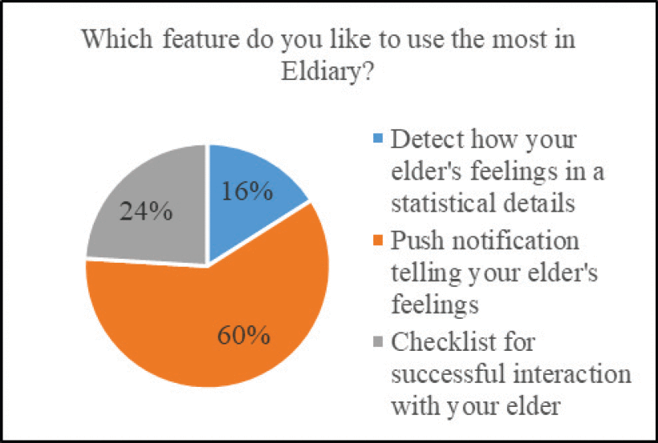
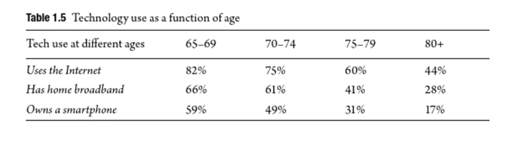

As technology continues to impact our lives significantly, our society grows, and our knowledge of the future grows exponentially, making it easier for us to deal with these modern innovations and advancements. However, as the saying by Chaucer (2020) goes, "Time and tide waits for no man", but isn't that the problem with modern technology, wherein time has become so advanced that so many generations find it arduous or strenuous to comprehend the basic understanding of different forms of technology and every person in society have different levels of knowledge of technology, some more so than others, but what is certain is that those who were brought up and taught how to use the internet and such, were more likely to develop a more healthy understanding and adapt better to the growing environment around them. In a book published by Baecker (2019), it says, "Older adults experience more vulnerability with respect to new technology", implying how all these innovations in digital devices and the internet of things have become too much for many of the older generations to cope with, making it extremely difficult for them to develop fundamental understanding and connections with digital devices. Another intriguing key point that Baecker (2019) brings up another fascinating key point: "73 per cent of seniors" struggle to understand and navigate new electronic devices, showing that as time passes, not everyone can assimilate themselves to change. Although the technology for the elderly the population is not so well endorsed, that does not necessarily mean that they have not forgotten to consider how they feel about these innovations; they are just more focused on the benefits that their devices could offer to the older generation, rather than the accessibility and ease of use. Especially in these dark times, with a pandemic plaguing the whole of New Zealand and the world, it becomes apparent that the assistance of Technology and IT staff is needed more than ever to help everyone and so the in-demand supply for standard devices like laptops and smartphones increases, which incurs the senior citizens to create new strategies that give themselves more confidence in using unfamiliar forms of technology that would seem alien to them, such as Naming their tablet or humanizing their phone helps to bond older people to Technology (Wilson-Nash & Tinson, 2021).
Technology isn't all bad, though the benefits of it surely outweigh the deficits that are encountered on an everyday basis; its crucial to remember how technology affects everyone in different ways, whether it's their physical or mental state and how each generation reacts, hence the importance of having aspects like client feedback and critical evaluation, which assist in the development of new and reliable devices that can appeal to all generations.
Figure 1
Helping seniors cross the digital divide | Isabella Martinez | TEDxTemecula.
Technology is the future; humans, young and old, need to be comfortable and embrace technology in our everyday use. Research by Mukhopadhyay et al. (2021) has identified that from 2017 to 2014, 50 elderly residents died in their homes from falling to the ground in Singapore. Due to these preventable deaths and technological advancements, the Singapore government then funded a test pilot for fall detection devices installed in 500 homes. The author also reports that these fall detection devices use sound technology, accelerometer, and motion-based activity to detect a fall and notify caregivers to provide support. This use of technology benefits seniors, as when we become elderly, we become more venerable and need more significant support. The fall detection system is only one of the numerous technologies aimed at seniors and those less able to support themselves actively.
Caring for the elderly is growing increasingly challenging. Carers find it challenging to care for the elderly as they struggle to know how they feel and what they need (Yap et al., 2021). Yap et al. (2021) have also identified a disconnect between the carer and senior relationships. They have, in turn, created a virtual diary app where the elderly can write in and convey their thoughts and feelings, that Artificial Intelligence (AI) will then analyze and express the emotions to the carer without revealing the content of the writing. Yap et al. (2021) believe this will enable a better relationship between the elderly and their caregivers as the caregivers can better understand the needs and feelings of seniors and enable fast and more accurate support when and where it matters.
The two forms of technology designed for seniors identified above, from the fall detection technology that detects a fall with an accelerometer and motion technology to the virtual diary that conveys the writers' feelings and emotions to their caregiver, are excellent forms of technology created with elderly as the designed end user. However great these technologies are, the issue of implementation and use exists. The use of technology is not always implemented widely among seniors, and the older, more familiar techniques such as pen and paper are likely to prevail against a digital-based diary for our elderly population. However, like all technology, there are opportunities for their implementation, such as the installation of fall detection systems into homes with limited input required from the resident and will be suitable for those of all technological capabilities as the system handles the notifications and processing and this similar for the virtual diary where the elderly user is only required to write down their thoughts and idea. The AI will analyze the input for the system to output the results to the caregivers' dashboard. A notification is sent, as shown in figure 1, the caregiver notification was a top requested feature, as this provides the carer with real-time access and more significant insights to support their senior user (Yap et al., 2021).
Overall, both forms of technologies are vastly different; nonetheless, they share the same principles and highlight the need to implement technology gradually, seamlessly, and with simple or minimal input from the senior user. When these steps are implemented successfully, they build the foundation for a great app designed for seniors. Yap et al. (2021) report on their desire for future developers to design and develop their applications and programs for the elderly with similar methods of design and functionality, as highlighted in the authors' report..
Figure 2
ELDIARY: A digital diary mobile application integrated with emotion recognition for elderly.

Although technology does have its uses from time to time, being heavily reliant on it can have its drawbacks, as sometimes shown by the negligent younger generations and even the stubborn older generations, where the effects of modern devices and IT have divided society to a standstill and instead of trying to address the problems that plague us, we are left with the mindset of worker ants. Wilson-Nash and Tinson (2021) state that It's well known that the stereotype of older adults fiddling with technology goes them completely bamboozled, and there is a reason. Over the years, technology has developed so much that it has become a crutch to younger generations while a hindrance to the older generations. Wilson-Nash and Tinson (2021) also report that 18 per cent of over 65s do not have internet access, and with a worldwide pandemic, it is no wonder why the older generation is feeling more isolated and overwhelmed with technology because it is forcing them to adapt and change with society rather than at their own pace.
Blanchard (2022) states that even with the innovations that scientists manage to come up with, it's a fact that many products fail to address the debilitating factors of age, especially with the older generation, with a decrease in their thought processes and loss of basic memory rapidly declining with the older they get. Although technology is meant to be simple and easy to use by the average citizen, the senior population do not have the skillsets that the younger generation has, such as an acute sense of online safety (cybersecurity) or adaptability with new/unfamiliar devices. This also brings up a major factor that some of the elderlies are stricken with physical conditions or health problems that also inhibit their learning in this new modern age, such as Alzheimer's disease or dementia and Baecker (2019) reports that his data forecast estimates show that by 2030 there will be over 74 million people who have dementia and by 2050 130 million. As one progresses through the various stages of dementia, from mild to severe, the problems will only continue to stack and worsen. Out of all the various articles and figures that I've explored, most have shown a clear indication that as you progressively get older, the less likely you are to have any experience or knowledge about how technology works because it's changing so much that they are unable to keep up and process all that info they receive. This could explain why so many seniors are so unknowledgeable in this modern era because, while they are just beginning to understand how to do the basics, new and advanced teachings are being created, hence the distaste towards technology because it makes them feel like the effort that they put in becomes null and void.
Overall, while it does not necessarily think that all technology is bad, there are a lot of loopholes and gaps that make technology more challenging to navigate, so it makes people like seniors develop a distaste for it. But with time and professional guidance, we can mitigate these problems they encounter and create a deeper connection to understanding how each person's mind works.
Figure 3
Computers and society: Modern perspectives

The use of technology is excellent for all, young and old, technology challenged, and technological minded. In America, in 2017, Baecker (2019) states that the use of technology in those over 60 had increased to around 66 per cent compared to only 14 per cent, 17 years earlier in 2000, before modern technology was invented. Baecker (2019) has identified that reducing daily activity, involvement, and early death may be due to loneliness. However, loneliness has declined since the introduction of technology for seniors in easy-to-use video and messaging devices to connect with loved ones worldwide. Caro (2021) states that for many seniors that are unfamiliar with the service or how to use video calling apps such as Zoom, Facetime and many more, it can be frightening and overwhelming for the first several times they use it, so Caro (2021) has developed "the fundamental criteria" to use for those technology challenges such as seniors. Caro (2021) states that the device must be correctly set up before the elderly receive the device. The elderly resident needs to turn on the device and use it without setup. The author has identified that the younger generation and those more technologically able can assist with setup either in person or remotely. Caro (2021) also mentions that the use of voice assistance, such as Siri or Alexa, could be highly beneficial for seniors, as the voice assistant can assist the senior with a simple task, such as telling them the weather or the top news for the day, in the future voice assistance, will become more capable of our daily task. As mentioned earlier, they may be able to help the elderly by being something they can talk with at any time and therefore have interaction that could assist with the loneliness that Beaker (2019) has identified.
Technology is set to expand and rapidly evolve, and improving what we once thought was impossible will soon become a reality (Science Focus, 2022). The future of technology was exciting and provided more companies utilize Caro's (2021) "fundamental criteria" during their development and design of future applications of technology for seniors and take the author's recommendation of enabling the option of remote setup, so someone more capable can set up the device remotely, the app will be fit, for use by the elderly. As reported by Halpert (2019), the population over 50 is set to double by 2050 and will represent 20 per cent of Americans and for the less technically capable, with the Technology of 2024
Across all articles and reports analyzed, it is evident that there is significant research into the quality of elderly life and ensuring they can access and embrace technology as we all do, both now and in the future. As highlighted by Halpert (2019), the older population of those over 50 is set to double and represent 20 per cent of the Americans. It is likely, that this is a result of technological advancement, as there will be more advanced techniques, tools and research available to better inform medical perfectional and result in more advanced and safer procedures combined with the greater utilization of AI and voice assistance to combat loneliness and enable a way for caregivers to analyze residents' emotions and feelings, it is set to increase the elderly population as it is hoped they will live longer.
However, when it comes down to it, with all the underlying factors and opinions that the elderly have about technology. The question most people are concerned with is do technology's benefits outweigh the problems and complexities that are accused by the senior population and if so, do the elderly have the desire to adapt and change to this evolving society or not? With the world evolving to such a degree, it became almost imperative that its citizens must adapt and so the potential risks that would be encountered would be significantly increase due to supply demand. However, with change does come innovation and with that comes potential. We all understand that on a fundamental level, technology is not the elderly's strongest suit, although that does not mean that they have the inability to learn, with time and patience even the most incapable can become the most useful. Although statistics show that the elderly are less likely to own a smartphone or other electronic device, that does not signify that they use that device daily. (Blanchard, 2017) A figure created by the Faverio (2022) shows that while 48 per cent of young adults, ages 18-29, are constantly online, the 8 per cent of people aged between 50 and 60 are not so much. This shows that while the elderly may have gotten their hands on technology, it also implies that they don't know how to use or choose not to. It is important to note that while possessing something doesn't mean you necessarily know how to use it, hence the importance of learning and the obligation the older generation feel towards this change. With this change however opens opportunities for the younger generation to bond with their elders and by having that, allows the younger generation to learn more while also developing their skills with modern technology, while simultaneously assisting the elders who have little to no skills with technology and by hopefully breaking down these barriers between young and old, we can further establish a more forgiving and helpful society, thus' the benefits of modern technology, we are essentially killing two birds with one stone, as the saying goes.
Times change and we can't expect every senior citizen to feel the same way about technology that the younger generations feel towards it, but we also can't expect the older generation to understand technology in less than a milli-second and immediately develop solutions that would be considered trivial for us. Many of the older people who weren't introduced to technology during their time, would of course find it to be extremely difficult to learn, especially when comes to business who don't specialize or aren't well known for using technology, it's highly probable that they would encounter these problems being introduced to a new digital environment, but the rewards that are obtained can be quite beneficial in assistance with the older generation, so it really all depends on how you as person view technology and if you are willing to reap the rewards that are sprung from the risks that you encounter.
As highlighted on our report, technology is set to be the future, so we all need to have the opportunity to use and access technology whether you are younger or older. We have discussed, elaborated, and highlighted ways to ensure technology inclusion as well as the positives and negatives of technology for seniors. Throughout our report, Gregory and I have ensured we have written to an academic level by citing and referencing primarily academic articles or using best judgement and cross checking all facts to ensure we are only putting across true and accurate information and not misrepresenting the facts or statistics in our report into technology for seniors. We have analyzed the ethical grounds and responsibility’s associated with technology for seniors and it encourages those more technology capable, such as the younger generation to help and support seniors and those less technology capable to become more confident, including what companies are and could be doing to assist with the increase of elderly using technology and on the other hand how the elderly need to be educated and aware of the negatives that are also associated with technology, such as the unethical scammers and phishers destroying the elderly relationship and trust with technology and likely forcing them to had discomfort or fear when or if they use technology in the future. I recommend that future development and creation of technology whether it is directly designed for seniors or not, use the fundamental design concepts as mentioned in our report as well as using best practice when developing, introducing and supporting seniors with technology and I support the creation and introduction of documentation to support and inform technology developers what should and need to be included in technology to help reduce the gap between technology and seniors that we reported on in this report.
Overall, I am satisfied with the outcome we have produced and as mentioned we have ensured academic integrity throughout by the use of primarily academic articles and correct referencing of information and sources to APA 7th standards. Gregory and I have worked diligently throughout this assignment, however our third group member, Reid has not contacted me nor has Reid contributed in any way and has scored 0/28 in my peer evaluation. I was lucky enough to have Gregory who as completed all work required of him as reflected in my peer evaluation score.
Being a senior citizen, you would think to be treated with more respect and shown more gratitude as you get older, but as time moved forward, society slowly outgrew the old ways and assimilated into the new modern age. It’s clear that in this society, knowledge and understanding play a vital role in every life, as well as adaptability to change. With modern technology taking over, becoming part of our every day to day lives, it becomes necessary to change with the tide of innovation. As we grow older it also becomes quite distinct, that you can’t do things as efficiently as you use to, this is just human biology. Hence the need to have the ability see things from another perspective and the importance of staying connected with yourself and other around you. Devices like, smartphones and laptops will always continue to evolve, however with perseverance and help you can overcome hardships that you would most likely encounter without them.
Overall it was quite the interesting topic to research and showcase the complexities that the senior population encounter with technology and how big the gap of understanding modern technology is larger than I could have anticipated. I was fortunate enough to have the help of Thomas and his vase array of coding knowledge and skills, which made doing this assignment much easier and with his help we were able to complete this assignment to the best of both of our abilities.
Computing Technology in Society (COMP501) | Assignment 3 | Thomas Brears (#20122554) | Gregory Doo (#20113186)
© Thomas Brears & Gregory Doo | Auckland University of Technology Students